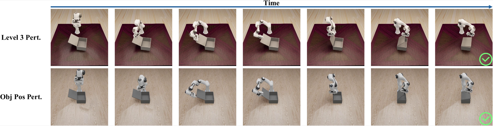
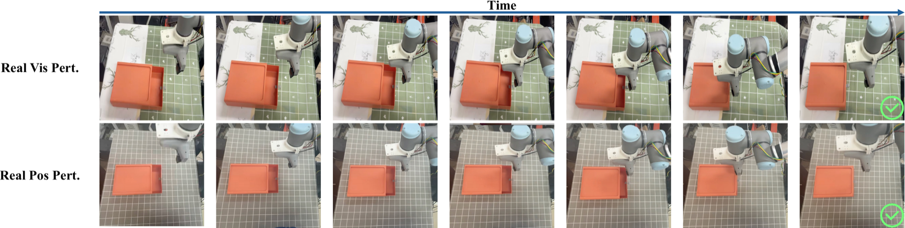

Robot visuomotor policies are commonly formulated as autoregressive, diffusion-based, or more recently, flow matching models. Among them, Action-to-Action (A2A) flow matching improves inference efficiency by initializing generation from historical action priors rather than stochastic noise. However, stale historical motion patterns and entangled global visual representations can jointly reduce robustness under spatial out-of-distribution (OOD) shifts and visual distractors. In this work, we propose SlotFlow, an object-centric flow matching policy for robust visuomotor manipulation. SlotFlow decouples scene observations into semantic (“what”) features and lightweight image-plane spatial (“where”) cues to provide object-aware policy conditioning and current-state grounding. The semantic representation suppresses irrelevant background correlations, while the spatial cue improves adaptation to shifted object configurations. Extensive simulation and real-world experiments demonstrate improved robustness under visual distractors and severe spatial perturbations while preserving the low-step inference efficiency of A2A. Controlled initialization and perception ablations further identify object-centric grounding as a major source of the gains and show that it complements, rather than replaces, useful historical motion priors.
Separates task-relevant semantic object features from image-plane spatial cues.
Uses lightweight spatial anchors to adapt to shifted object configurations.
Preserves the six-step inference budget of history-conditioned A2A flow matching.
SlotFlow uses a Cascaded Foveated Module to extract object-centric semantic features and a lightweight image-plane spatial anchor. A coarse global stage localizes the target object and a fine local stage refines its representation through a high-resolution crop. These complementary cues are fused with visual, proprioceptive, and historical-action features to condition six-step flow matching.

Overview of SlotFlow. The Cascaded Foveated Module supplies semantic and image-plane spatial conditioning to history-conditioned flow generation.
On Close Box, SlotFlow improves robustness under visual, kinematic, and object-position perturbations while retaining the six-step inference budget of A2A.
| Method | Steps | Level 0 | Level 1 | Level 2 | Level 3 | Pos. Pert. |
|---|---|---|---|---|---|---|
| DDPM-DiT | 100 | 86% | 0% | 0% | 0% | 56% |
| FM-DiT | 10 | 98% | 2% | 2% | 2% | 60% |
| Score-U-Net | 100 | 84% | 2% | 0% | 0% | 58% |
| VITA | 6 | 100% | 4% | 2% | 4% | 74% |
| A2A | 6 | 100% | 12% | 18% | 10% | 70% |
| SlotFlow (Ours) | 6 | 100% | 50% | 52% | 52% | 80% |
Close Box success rates under visual, kinematic, and spatial perturbations.

Simulation trajectories under Level 3 perturbations and spatial displacements.

Real-world UR3 deployment under tablecloth replacement and object-position perturbations.
The official implementation is available on GitHub. It includes SlotFlow-specific code, configuration files, and reproduction instructions built on the A2A flow-matching framework. Checkpoints and datasets are not included in this release.
@inproceedings{li2026objectcentric,
title = {Object-Centric Conditioning for Visuomotor Flow Matching},
author = {Li, Jijie and Yang, Xu and Zou, Junhong and Zhao, Chunhai and Zhao, Chaoyang and Lei, Zhen and Zhu, Xiangyu},
booktitle = {Conference on Robot Learning},
year = {2026}
}